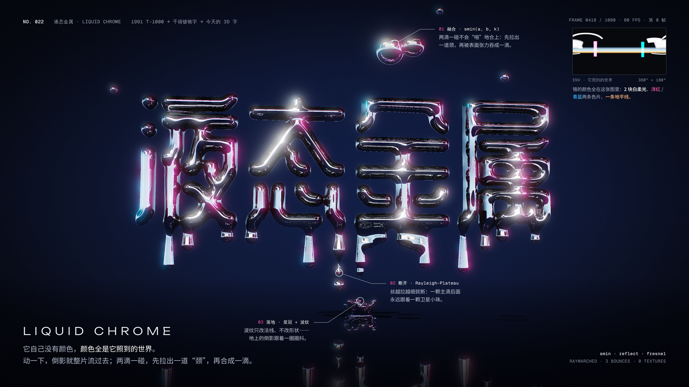
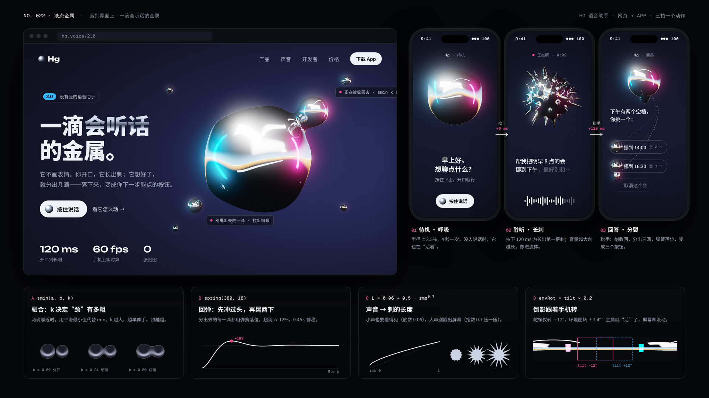
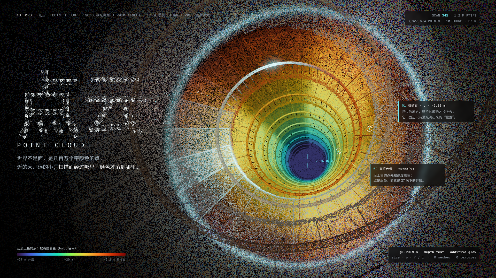
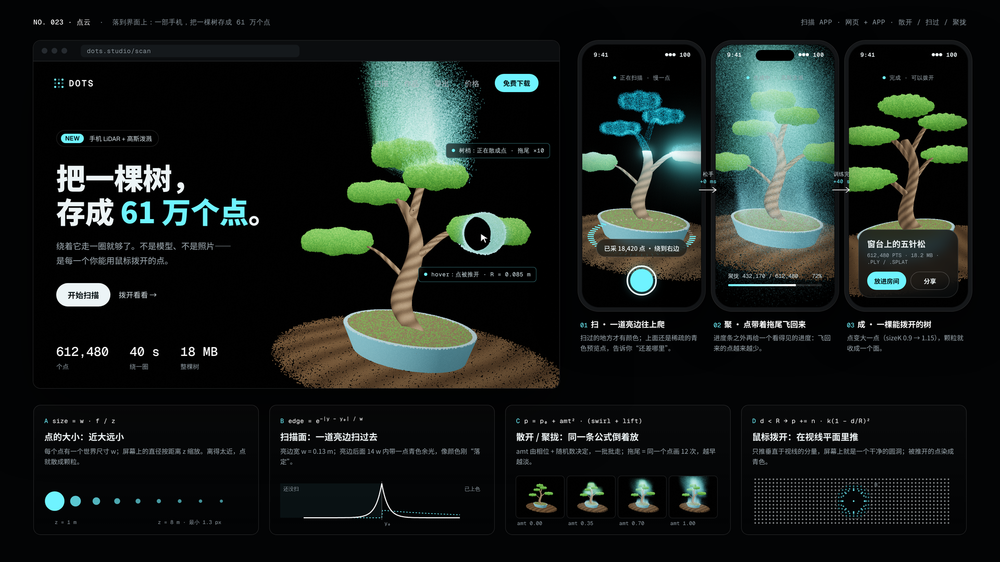
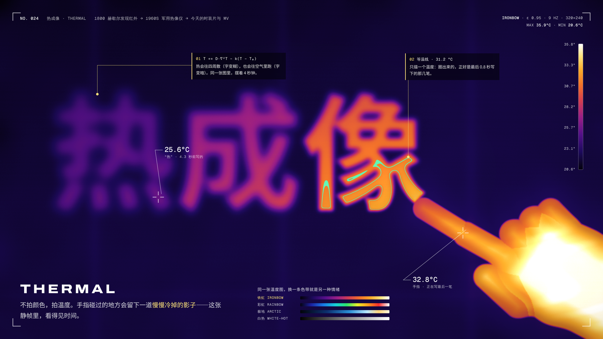
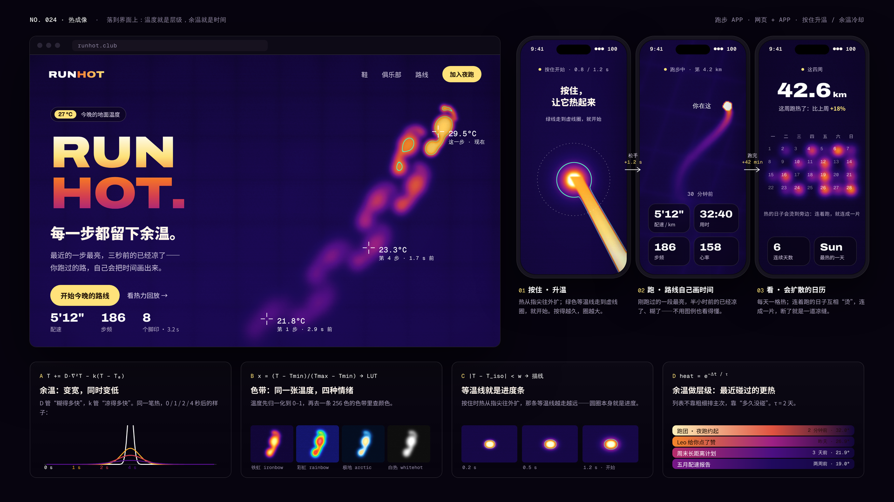

液态金属Liquid Chrome
1991 T-1000 → 千禧镀铬字 → 酸性设计 → 今天的 3D 字与 AI 形象
它自己没有颜色，颜色全是它照到的世界。

第 0 帧 · “液态金属”四个字本身就是会滴落的镀铬液体（光线步进 + 3 次反射）：空中两滴正在融合拉出“颈”，一根丝断成主滴 + 卫星珠，落地溅出皇冠和波纹。右上角是它“照到的世界”。

界面 · 没有脸的语音助手：待机时呼吸 → 开口长出磁流体的刺 → 想好了分出三滴，落成三个按钮。底部四张动效配方：smin 的 k、弹簧、音量→刺长、陀螺仪转倒影。
点云Point Cloud
1960s 激光测距 → 2010 Kinect → 2020 手机 LiDAR → 2023 高斯泼溅
世界不是面，是几百万个带颜色的点。

第 0 帧 · 380 万个点的螺旋楼梯井：扫描面以上是照片投上去的真颜色，扫描线发着光，以下还只有激光测出的“位置”，按高度染成 turbo 色带，一路卷到 37 米下的井底。标题也是点。

界面 · 扫描 App：网页上鼠标能把树“拨开”一个洞、树梢正散成点；手机里 扫（一道亮边往上爬）→ 聚（点带拖尾飞回来）→ 成。配方：近大远小、亮边曲线、散开/聚拢同一公式、拨开。
热成像Thermal
1800 赫歇尔发现红外 → 1960s 军用热像仪 → 今天的时装片与 MV
不拍颜色，拍温度——静帧里看得见时间。

第 0 帧 · 一根手指在墙上写“热成像”：4 秒前写的“热”已经凉了、糊了，刚写的“像”还亮着；一条 31.2 °C 的等温线正好圈出最后 0.8 秒的笔画。温度是真模拟出来的（扩散 + 冷却）。

界面 · 跑步 App：网页是一串越早越凉的热脚印；手机里 按住升温（等温线就是进度圈）→ 路线越往前越热 → 会互相“烫”的热力日历。配方：扩散公式、色带查表、等温线、余温做层级。